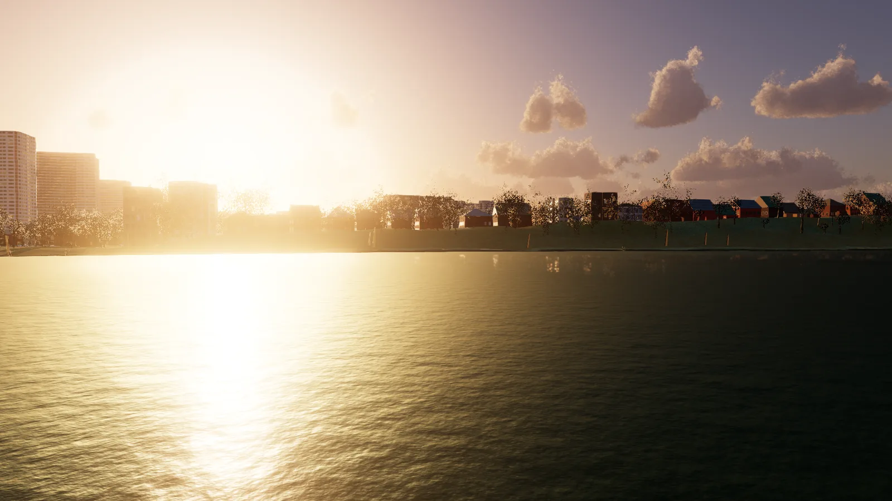
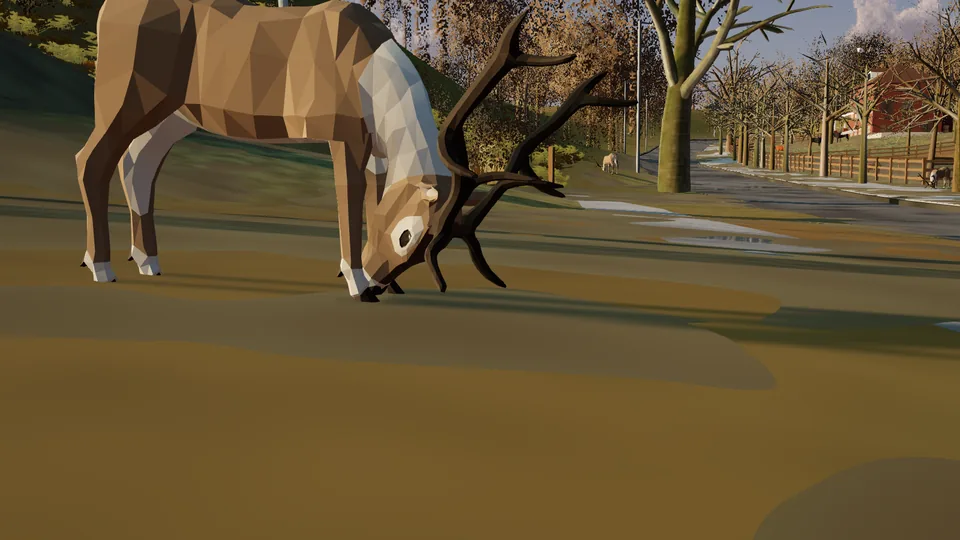
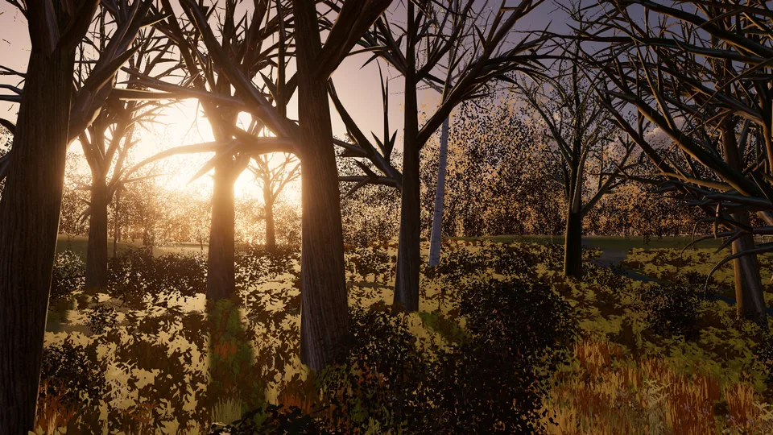
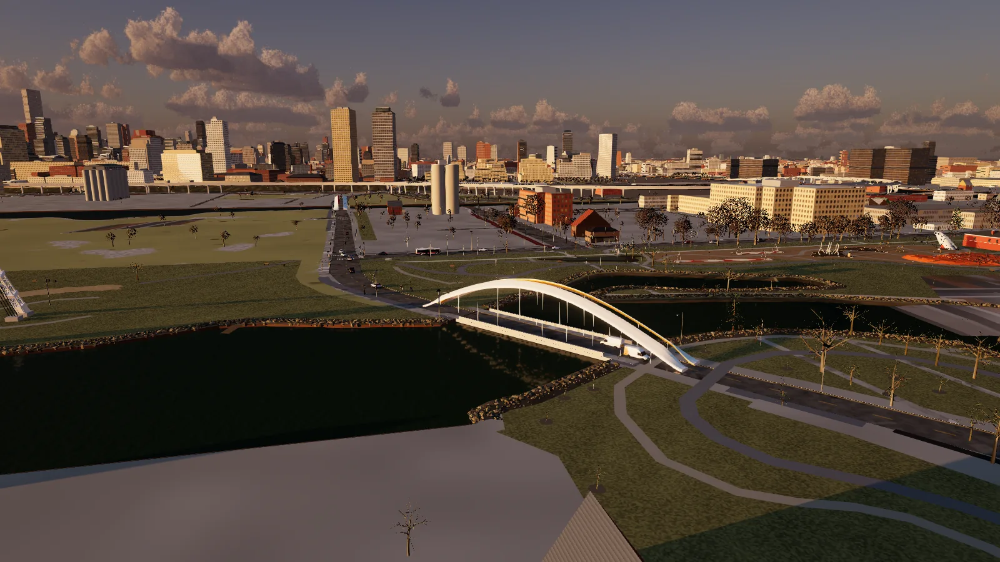
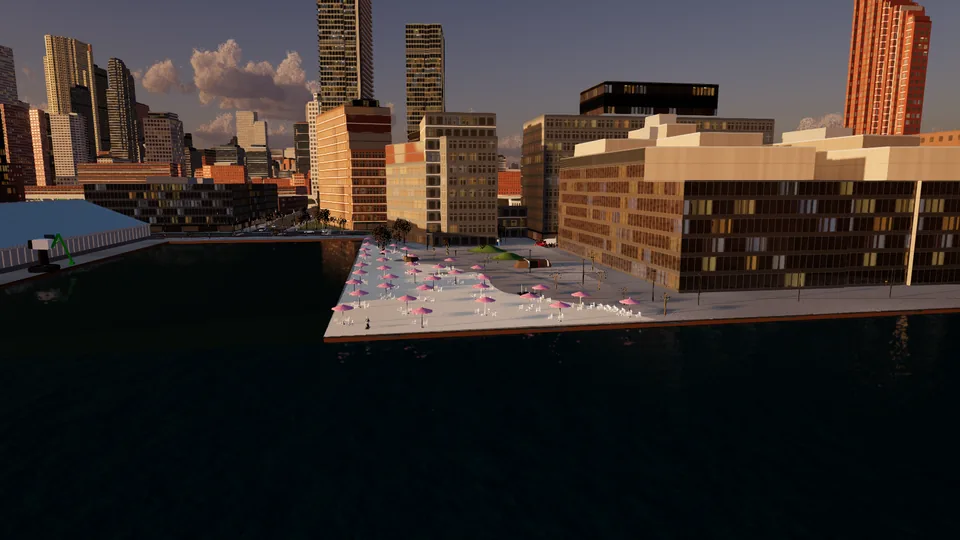
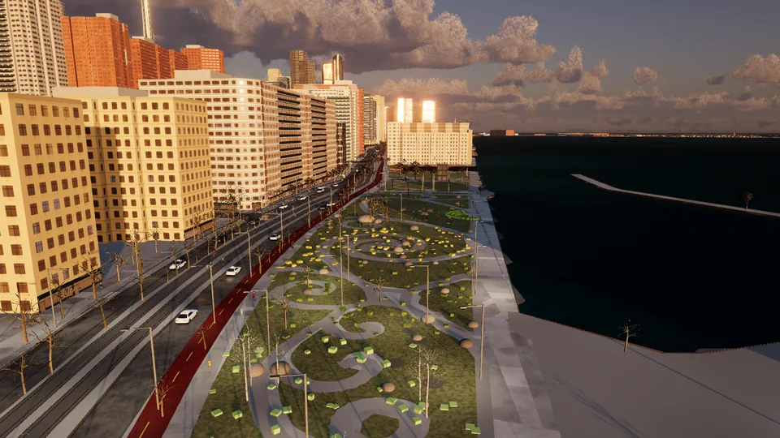
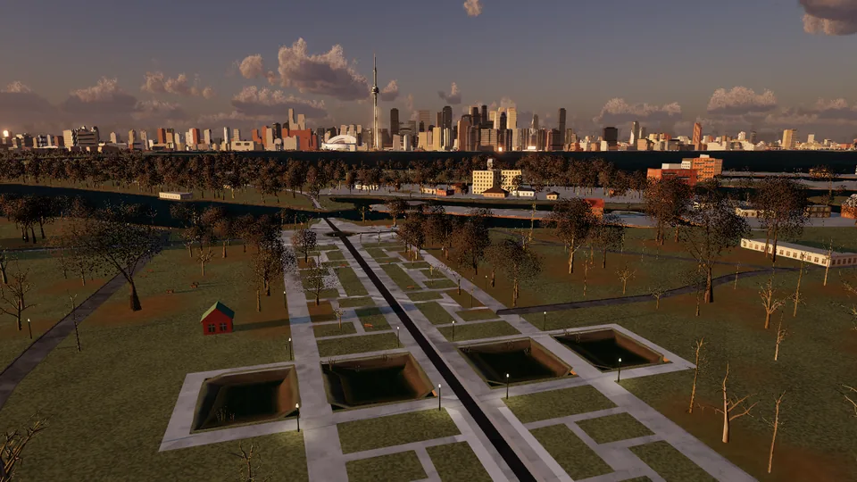
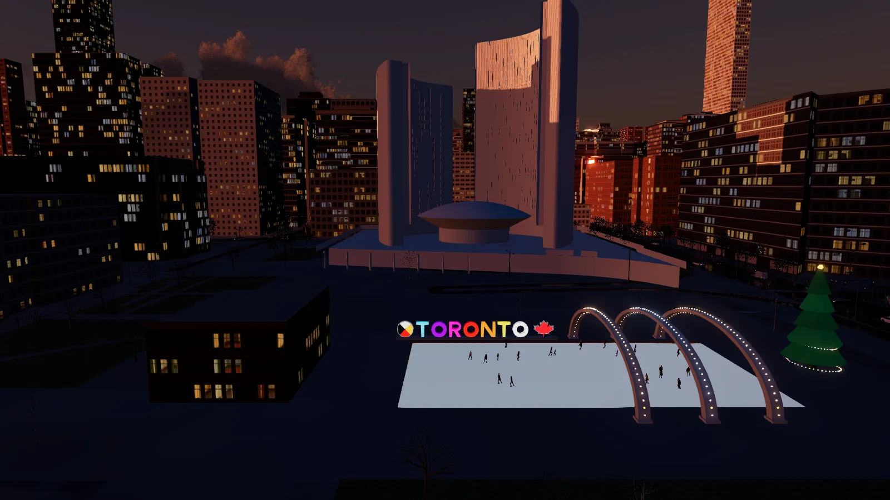
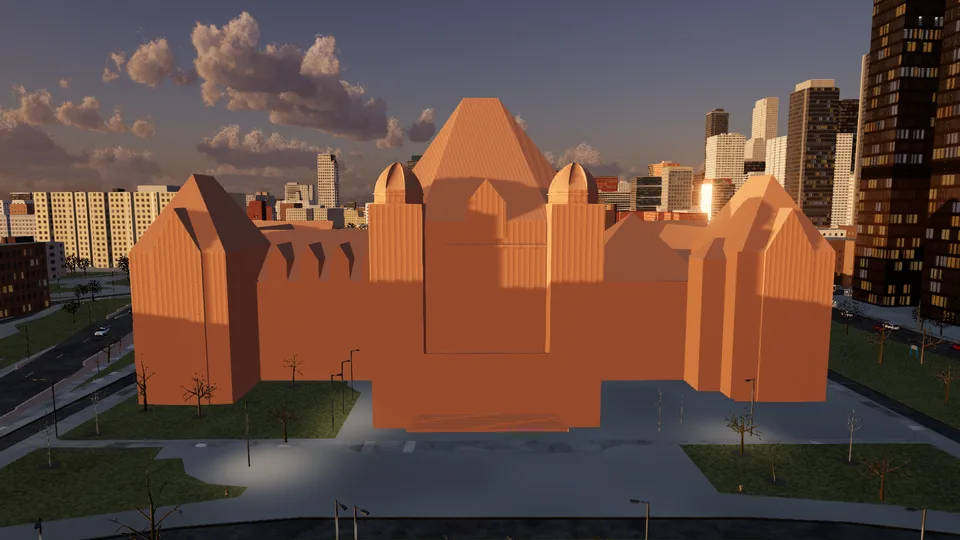
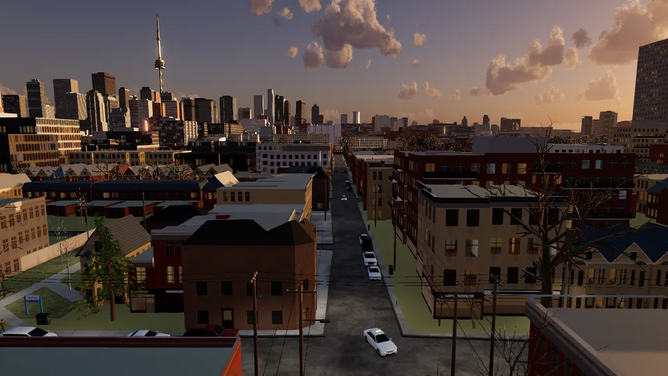

The 504 along King
A passenger seat on a King streetcar. It follows its normal tracks, the traffic signals and its stopping pattern. Or walk to a stop and board any car that pulls in.
Ride the 504Free · Every week Toronto on Lake Ontario
Outside, at Pearson
Screenshot from the app
From the lake to Eglinton in 3D, in your browser (downtown on phones). Walk, cycle, drive, fly, or ride the TTC.
On the cover: the skyline and the CN Tower from over the harbour at golden hour, in the app.
A passenger seat on a King streetcar. It follows its normal tracks, the traffic signals and its stopping pattern. Or walk to a stop and board any car that pulls in.
Ride the 504In the picture: a Line 2 train on the Bloor Viaduct over the Don Valley, in the app.
An eastbound train from Castle Frank: through the tunnel, over the Bloor Viaduct, and into Broadview. Both directions run.
Ride the subwayThe whole of High Park on its real ground, from the plateau down to Grenadier Pond and the ravines, with the zoo's paddocks and their animals.



The pond. Grenadier Pond, with its reeds and willows, sits at its own level on the province's lidar ground; the slope down to it from the plateau is real.
The woods. Black oak savanna, oak woodland and the ravine woods, drawn crown by crown from the lidar, with worn-earth trails. The trees follow the real date: they are bare in the picture and green in summer.
The zoo. Ten species in their real paddocks (bison, yak, Highland cattle, llama, reindeer and more) that graze, peck and amble. The animals are licensed models; where they wander is made up.
The real zoo is closed for construction until spring 2027. Here it is open, as on an ordinary day.
The waterfront rebuilt from the City's plans and photographs, from the new Port Lands park to the ferry docks. Pick a place and you arrive on the shore in front of it.

Biidaasige ParkThe Port Lands · the new park
Sugar BeachQueens Quay E · the pink umbrellas
Toronto Music GardenQueens Quay W · six Bach rooms
Centre IslandToronto Island Park · the woods and the skylinePick a sight and you arrive on the street in front of it, facing it. Everything around it is there too: the roads, the traffic, the people. On a laptop or desktop the map runs up to Eglinton; a phone has downtown to Bloor.

Toronto City HallNathan Phillips Square · the sign, the arches, the rink
Queen's ParkUniversity Ave · the Legislature
Kensington MarketAugusta Ave · the old main streets| Reading | Downtown every device | To Eglinton desktop | Source |
|---|---|---|---|
| buildings, with the City's own heights | 35,271 | 140,548 | City of Toronto 3D Massing |
| named streets to walk, cycle or drive | 1,383 | 3,390 | OpenStreetMap |
| street trees, placed at the City's mapped spots | 55,852 | 180,125 | City of Toronto Street Tree Data |
| of the city, to scale, 1 : 1 | 76.6 km² 11.6 × 6.6 km | 190.8 km² 17.5 × 10.9 km | City of Toronto · OpenStreetMap |
Outside right now Environment and Climate Change Canada
Search like a map app. Type a place, a street, a neighbourhood or just “café”. Suggestions appear as you type, nearest first, typos forgiven.
Plan any route. From where you stand, or from anywhere, to anywhere. By car (one-way streets obeyed), on foot or by bicycle, with every turn spelled out. Try directions to Union Station.
Go, or let the guide drive. Follow the blue line on the road with live turn-by-turn guidance, or switch on Tour Drive and the guide takes you there, stopping at red lights.
The real date. Leaves turn, rinks freeze and fill with skaters, patios close and the holiday lights go up when Toronto's do. Open it in summer and it is summer.
Toronto's own sky. The sun where it stands now, and the cloud, fog, rain or snow that Pearson reports. Or pick golden hour, midday, sunset or night.
Buildings. Every footprint and height from the City of Toronto's 3D Massing. On desktop, downtown's houses, shops, towers and places of worship are drawn in their real shapes, with roofs from the City's heights and faded painted signs on old party walls. The façades are the engine's own: no photographs.
Streets. OpenStreetMap's roads with their lanes and one-way streets, laid on the City's edge-of-roadway map, signals where they are mapped. Road works come from the City's Road Restrictions feed: barrels, cones and signs, and traffic that goes round them.
Trees & street furniture. Street trees, fire hydrants, bike rings, litter bins and poster columns at the spots the City's open data maps. The woods of High Park and Toronto Island Park are drawn crown by crown from the province's lidar.
Water & light. The lake, the harbour and the shoreline from OpenStreetMap: natural shores are beach, reed and mud where it maps them, and seawalls stay seawalls. The terrain is SRTM, with High Park and the Don Valley on the province's lidar. The sky is Toronto's: the sun where it stands now, and the cloud, fog, rain or snow Pearson reports.
Parks & animals. The City's trees and paths, and High Park's woods and trails from lidar and the City's data. The zoo's animals are licensed models placed in the real paddocks; their wandering is made up.
Made up. The look of the water and the façades are art. The TORONTO sign's fountain, the skaters and the crowds are scenery on a rule, not a survey.
Slop Toronto runs in your browser and needs WebGPU: a recent Chrome or Edge on a laptop or desktop works best.
Explore TorontoYour browser doesn't seem to support WebGPU yet. Try the latest Chrome or Edge.